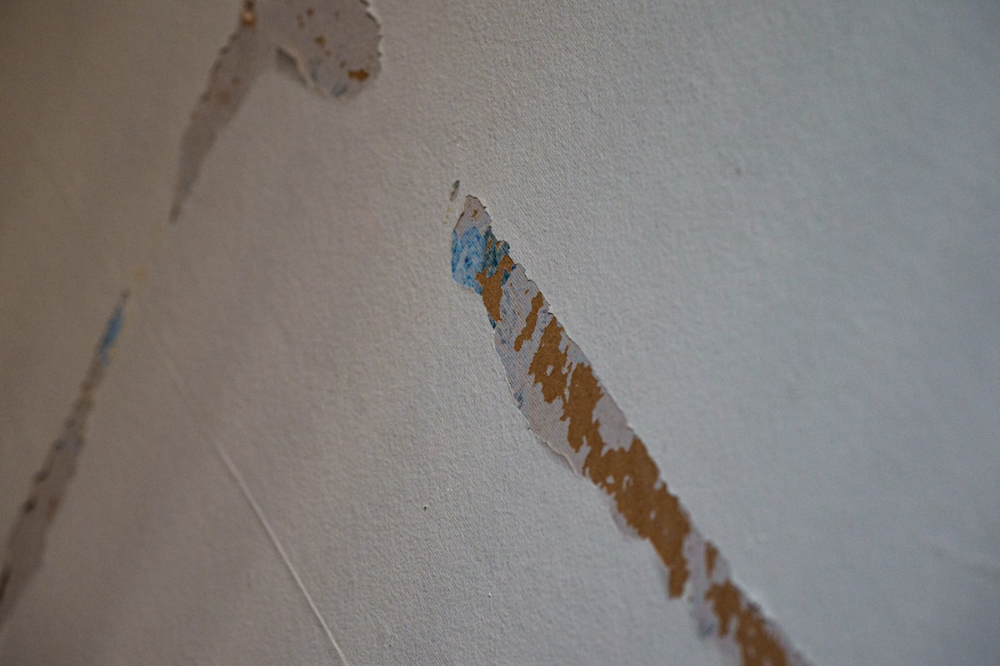

No part of restoring a water-damaged building matters more than structural drying, yet it is also where untrained crews make the most mistakes. Extraction takes care of standing water, but drywall, framing, subflooring, insulation, concrete and other building materials stay loaded with trapped moisture. A structure left wet ends up with odors, wood rot, mold and failing materials, so the moisture has to be removed in a scientific way using dehumidification and controlled evaporation.
Lawrence Restoration Squad employs IICRC-certified structural drying technicians who understand psychrometry, the study of temperature, humidity and moisture relationships in air. For each job they apply it to calculate airflow patterns, temperature settings and the placement of equipment that will give the best conditions for evaporation. Plaster, concrete, hardwood and drywall each dry at their own rate, so each needs its own approach to get down to an acceptable moisture level with no added damage.
Every day of the drying process, we check moisture using thermal imaging cameras, thermo-hygrometers and calibrated moisture meters. The result is a detailed log of readings that tracks how moisture comes down over time in each material that got wet. Each day we use those numbers to reposition or retune the equipment so drying stays efficient. Drying is complete only when all affected materials reach acceptable moisture standards as defined by IICRC S500 guidelines, not when surfaces simply feel dry to the touch.

Comparing DIY and Professional Structural Drying
Some simple tasks are suitable for DIY, but most water damage work benefits from professional tools, training, and experience. Consider the following comparison:
| Factor | DIY Approach | Professional Service |
|---|---|---|
| Mold Risk | High risk from incomplete drying | Materials tested to the IICRC standard |
| Material Damage | No control over how fast materials dry | Settings adjusted for hardwood, drywall, concrete, plaster |
| Speed | Can drag on for weeks | Commercial equipment typically needs 3 to 5 days |
| Equipment | Household fans plus a home dehumidifier | Commercial LGR dehumidifiers and air movers |
| Science | No way to know it is dry | Temperature, humidity and airflow calculated per job |
Structural Drying Issues? We Can Help.
Get a free estimate from our expert team today.
Get Help: (985) 200-6276Structural Drying Prevention Tips
Taking preventive measures can help you avoid costly water damage issues down the road. Follow these tips from our IICRC-certified technicians:
- Address any water intrusion immediately, because the faster drying begins, the better the outcome
- Go by the meter, not by touch, since a dry-feeling surface may still hold moisture deep inside
- Keep belongings off the machines and out of the path of the air movers
- Keep windows and doors closed in areas being dried so the dehumidifiers stay efficient
- Make sure the technician can get in each day for monitoring visits
- Each unit is positioned according to the moisture map, so ask before shifting anything
Structural Drying, Step by Step
Our systematic approach delivers quality results on every project. Here's what you can expect when you choose Lawrence Restoration Squad:
Mapping the Moisture
Hygrometers, moisture meters and a thermal camera let us map moisture across each area that was affected. Baseline readings come from the map, and so does the plan for placing equipment.
Setting the Equipment
Commercial LGR dehumidifiers and high-velocity air movers are strategically positioned based on our moisture map. The materials being dried determine how we set the airflow and the temperature.
Daily Checks and Adjustments
Our technician returns daily to take moisture readings at all monitoring points, adjust equipment placement and document drying progress. We keep you posted on how the timeline looks.
Verifying the Dry Standard
When moisture readings reach acceptable levels throughout all affected materials, we document final readings, remove equipment and certify that your property has reached dry standard.
When to Call for Structural Drying in Lawrence
Catching these issues early helps you avoid costly problems and protect your property. Watch for these telltale signs that professional help is needed:
- Rooms that stay humid even with windows open and fans running
- Paint or wallpaper that bubbles, peels or blisters after a leak
- Musty odors that continue after extraction, which suggests trapped moisture
- Hardwood floors that are cupping, crowning or showing gaps between boards
- Baseboards or door trim that swell, warp or pull away from the wall
- Materials that feel damp or cool to the touch even after visible water is gone
- Materials breaking down in a spot that got wet before and was not dried by professionals
Early Action Saves Money
What seems like a minor issue today can turn into a major expense tomorrow. If you notice any of these signs, contact Lawrence Restoration Squad at (985) 200-6276 for a prompt evaluation.
Not Sure What You Need?
Our experienced technicians can assess your situation and recommend the best solution.
Call (985) 200-6276 NowWhy Professional Structural Drying Matters
Drying a structure properly takes science, and guesswork has no place in it. Simply placing fans and hoping for the best is the most common cause of secondary mold damage after water events. It involves daily monitoring, a calculation of the required grain depression (the capacity to remove moisture) and a working knowledge of the way materials absorb moisture and let it go. Without this knowledge, under-drying leaves moisture that feeds mold, while over-drying can damage wood and other materials.
Consumer products and the equipment professionals dry structures with have very little in common. Commercial LGR (low-grain refrigerant) dehumidifiers remove 10 to 20 times more moisture from the air than residential dehumidifiers, and high-velocity air movers create the precise airflow patterns needed to accelerate evaporation from structural surfaces. Between the investment in equipment and the training needed to run it, it is no surprise that DIY drying falls well short of a professional job.
Your Structural Drying Questions Answered
Get Structural Drying Help Today
The sooner you call, the sooner we can help. Reach Lawrence Restoration Squad for same-day service.
Call (985) 200-6276 Now